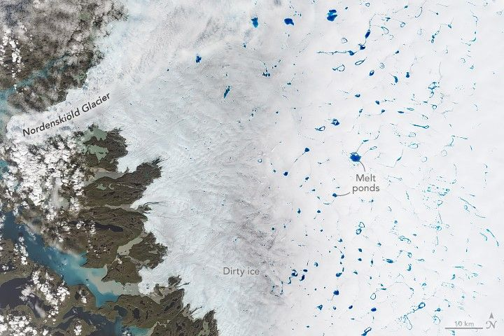

Greenland’s Bejeweled Ice Sheet
In spring 2025, jewel-toned points of blue began to appear on the white surface of the Greenland Ice Sheet. As summer arrived, they grew larger and more numerous, taking on unique shapes and occasionally forming connections. The colorful seasonal phenomenon is due to meltwater from snow and ice, which pools atop the ice sheet in places each melt season.
An array of melt ponds dotted the ice sheet in western Greenland on July 2, 2025, when the OLI-2 (Operational Land Imager-2) on Landsat 9 acquired this image. Ponding is typical this time of year, especially in the area shown here, east of Nordenskiöld Glacier and southeast of Jakobshavn Glacier (Sermeq Kujalleq), not pictured.
Part of the ice sheet appears brownish gray because impurities, such as black carbon or dust, remain behind as the snow and ice melt, exposing old, dark, “dirty” ice. Darkening of the ice surface lowers its albedo, or reflectiveness, which can hasten melting through the absorption of additional energy from the Sun in the summer months.
A close-up view of the first scene shows a detailed view of the blue meltwater ponds surrounded by white snow and ice. Thin streams of blue water connect some of the ponds.
Scientists are interested in melt ponds in part because water can affect how the ice moves. When ponds grow large enough, they can force open crevasses in the ice. Meltwater that drains through these cracks to the base of the ice can act as a lubricant between the ice sheet and bedrock and temporarily speed up the flow of ice toward the coast.
Melt ponds can also indicate the strength of a Greenland melting season, which generally runs from May to early September. As of June 20, 2025, the surface melting was tracking slightly above average, according to the National Snow and Ice Data Center. Two surges in melting—one in mid-May and another in mid-June—were strongest along the ice sheet’s western boundary. Time will tell if summer melting will migrate even farther inland, as it did throughout July 2024.